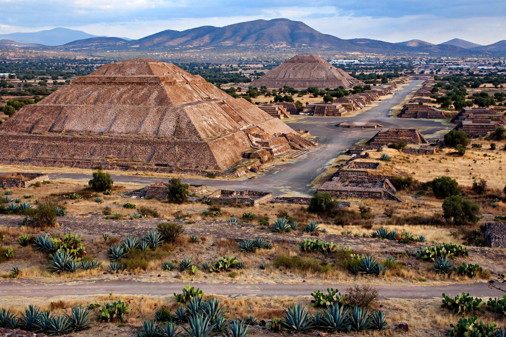

Pre-Columbian era
From Wikipedia, the free encyclopedia

The pre-Columbian era comprises the history of the Americas before the arrival of Christopher Columbus in 1492 and the European colonisation that followed. It spans the peopling of the continents (at least 15,000 years ago, probably earlier), the independent invention of agriculture, and the rise of civilisations — Maya civilization, Aztec, Inca Empire — as well as thousands of other societies from Arctic hunters to Amazonian chiefdoms. Pre-Columbian population estimates for 1492 range from under 10 million to over 100 million; the ensuing demographic catastrophe (mostly epidemic disease) killed the majority within a century.
Peoples and civilisations
Mesoamerica produced writing, the Long Count calendar, chinampa agriculture and city-states from the Olmec onward; the Andes produced metallurgy, quipu records and the Inca state — the largest empire in the pre-Columbian Americas — without wheeled transport or (in the north's sense) writing. North America's Mississippian cities (Cahokia rivalled London's population), Pueblo societies and Amazonia's engineered landscapes (terra preta, geoglyphs) overturned the old picture of sparse, static populations.
Contact and consequences
The Columbian exchange re-made both hemispheres' biology and demography: smallpox, measles and influenza preceded or accompanied conquest, emptying landscapes that settlers misread as wilderness. Archaeology (LiDAR surveys revealing Maya megastructures under jungle) and indigenous scholarship continue to revise the era's scale upward — and pre-Columbian history from footnote to foundation of the hemisphere's identity.